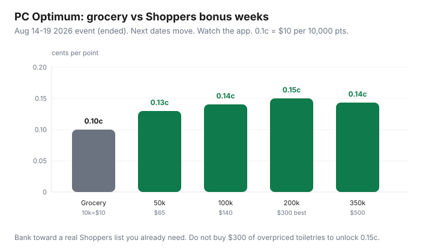

Food & Groceries · Canada
When to bank PC Optimum points for Shoppers bonus redemption events
Most PC Optimum balances die as $10 bites at No Frills. That is an honest use of a 0.1¢ currency. It is also how people miss the only regular lift in the program: Shoppers Drug Mart bonus redemption events, when listed tiers pay more than $10 per 10,000 points on a real Shoppers purchase.
This is a Canada-only treasury habit — not a points hobby. Grocery earn is still offers-first (see maximize PC Optimum). Banking is about when you burn, and only if Shoppers is a store you should visit anyway.
Disclosure: PC Financial Mastercards and beauty or health offers at Shoppers are offer types. Saving Optimizer may earn a commission if we later add partner links. We do not currently claim PC Financial, Shoppers, or Loblaw partnerships. Compare cards on the issuer’s site. This is education, not credit advice. Pay in full.
Key takeaways
- Default burn: 10,000 points = $10 (0.1¢) at grocery, Shoppers, and many Esso/Mobil stations.
- Shoppers bonus weeks can lift large tiers toward 0.13–0.15¢. The August 14–19 2026 event is the dated example; the next dates will move.
- Buy a list you already needed (pharmacy, priced toiletries). Do not “unlock” 0.15¢ with $300 of overpriced shampoo.
- Bank when an event is likely in the next month and your grocery cash-flow can wait. Redeem now if the $10 changes dinner.
- Esso luxury car washes can also beat 0.1¢ — only if you would have paid for the wash.
Standard grocery redemption math (10k = $10)
PC Optimum support copy still redeems in 10,000-point increments at participating Loblaw banners and Shoppers: $10 off. That is 0.1¢ a point, the same rate The Points Standard indexed in 2026. There is no airline chart. Statement-credit options on some PC Financial products can pay worse than in-store grocery. Prefer the till.
Worked example (labelled): 47,000 points in the app. You can pull $40 off a No Frills cart this week (40,000 points) and leave 7,000 sitting. You cannot pull $47. The leftover 7,000 is not “wasted”; it waits for the next 10,000-block.
How Shoppers bonus events improve point value
A few times a year — community-tracked around mid-January, April, August, and holiday windows — Shoppers runs a bonus redemption. You still redeem in 10,000-point blocks, but posted tiers pay extra dollars off. The 14–19 August 2026 event (Rewards Canada, Milesopedia; event ended 19 Aug) printed:
| Points | Discount | Vs default $10/10k | ¢ per point |
|---|---|---|---|
| 50,000 | $65 | +$15 | 0.13¢ |
| 100,000 | $140 | +$40 | 0.14¢ |
| 200,000 | $300 | +$100 | 0.15¢ (best rate) |
| 350,000 | $500 | +$150 | ~0.14¢ |

Typical exclusions: prescriptions, tobacco, stamps, transit passes. The purchase has to be large enough to absorb the discount. Tax is usually calculated on the price before points. Caps and “up to” language matter — read the offer tile, not a screenshot from 2024.
What to buy (and avoid) during bonus weeks
The Shoppers trap, restated: earning or burning 4–5% on shampoo that is 30% cheaper at No Frills is a loss. Bonus redemption is a sale on points, not a reason to treat Shoppers as a grocery store.
Buy: prescriptions’ front-store companions you already use (if eligible), toothpaste, deodorant, sunscreen, contact solution, a priced beauty item already on your list, baby gear you would have bought this month. Stack a loaded PC offer on the SKU if it applies.
Avoid: electronics Shoppers is bad at, seasonal candy, five serums, “grocery” milk and eggs unless the flyer is actually cheaper after you count the rest of the store, and anything you will not use before it expires. If the event requires $300 of spend and you only needed $40 of toothpaste, redeem $40 equivalent at grocery instead — or buy the toothpaste and leave the rest of the points for grocery.
Banking strategy vs redeeming ASAP for groceries
Bank if: you are not cash-tight this month, Shoppers is a normal stop, and you are inside a typical event season (watch RedFlagDeals / the app, not a paper calendar). A household sitting on 80,000 points in early August 2026 who needed $40 of toiletries anyway could wait a week and take a better tier if they also had a real $65–$140 list. A household that needs $20 off chicken tonight should pull two $10 grocery bites. Points are not an emergency fund; groceries are.
Do not sit on 200,000 points “for the 0.15¢ week” while paying a PC Mastercard interest rate. Redeem, pay the card, rebuild. Inactivity and devaluation are the quiet risks on a 0.1¢ currency that can reprint event rules anytime.
Combining Esso car-wash value edge cases
Esso’s public PC Optimum FAQ (reviewed Sep 2026): 4,000 points for 10¢/L on the first 40 litres is 0.1¢ — same as grocery. 10,000 points for a car wash can beat that if the wash would have cost $15–$20 (community and credit-card explainers cite up to ~0.2¢ on a luxury wash). If you hose the car in the driveway, grocery $10 is the honest number. Do not drive across town for a wash to beat a Shoppers event you were going to use on toothpaste.
A simple calendar habit for event watchers
- Once a week, with the Sunday grocery loop, glance at PC Optimum “offers” and Shoppers tiles — 30 seconds, not a spreadsheet.
- Keep a running Shoppers list on the fridge (pharmacy + toiletries). When it hits ~$40–$80, you have a bonus-week job.
- If an event drops and the list is empty, redeem groceries. Do not invent a haul.
- After the event, screenshot the receipt once so you know what posted. Then stop thinking about points until next Sunday.
- Revisit card choice separately: a no-fee PC World Elite is enough for most Loblaw households (Mastercard fee math).
Points are a rebate on stores you should shop. Shoppers bonus week is a calendar overlay. The menu still comes from Flipp and the fridge.
Sources & date stamps
- PC Optimum support: redeem in 10,000-point = $10 increments (reviewed Sep 2026).
- Rewards Canada and Milesopedia write-ups of the Shoppers bonus redemption event 14–19 Aug 2026 (tiers, exclusions, “up to” language). Event ended — not a live coupon.
- The Points Standard, PC Optimum point value (2026 index at 0.1¢; bonus events as the exception).
- Esso / Mobil PC Optimum FAQ (fuel and car-wash redemptions) reviewed Sep 2026.
Frequently asked questions
How much are 10,000 PC Optimum points worth?
At Loblaw grocery banners, Shoppers Drug Mart / Pharmaprix, and many Esso/Mobil stations the default is 10,000 points = $10 (0.1¢ per point). Shoppers bonus redemption events can pay more on listed tiers. Some Esso car washes can also beat 0.1¢ if you would have paid cash for the wash.
Should I always wait for a Shoppers bonus event?
No. If the points would change this week’s grocery bill and you do not have a real Shoppers list, redeem $10 bites at No Frills. Bank when you are within a few weeks of a typical event window and you already buy pharmacy, toothpaste, or other priced SKUs there.
What did the August 2026 Shoppers event pay?
Community trackers (Rewards Canada, Milesopedia) listed 50,000 pts → $65, 100,000 → $140, 200,000 → $300, 350,000 → $500 from 14–19 August 2026. That event ended. The next one will reprint similar tiers or not — read the live app.
Can I redeem bonus-event points on everything at Shoppers?
No. Prescriptions, tobacco, stamps, and transit passes are commonly excluded. Your bill must reach the discount. Taxes are usually calculated before points. Confirm the current event terms on pcoptimum.ca.
Is this credit or investment advice?
No. It is a household points calendar. Do not carry a PC Mastercard balance to farm points. Interest erases 0.15¢ immediately.